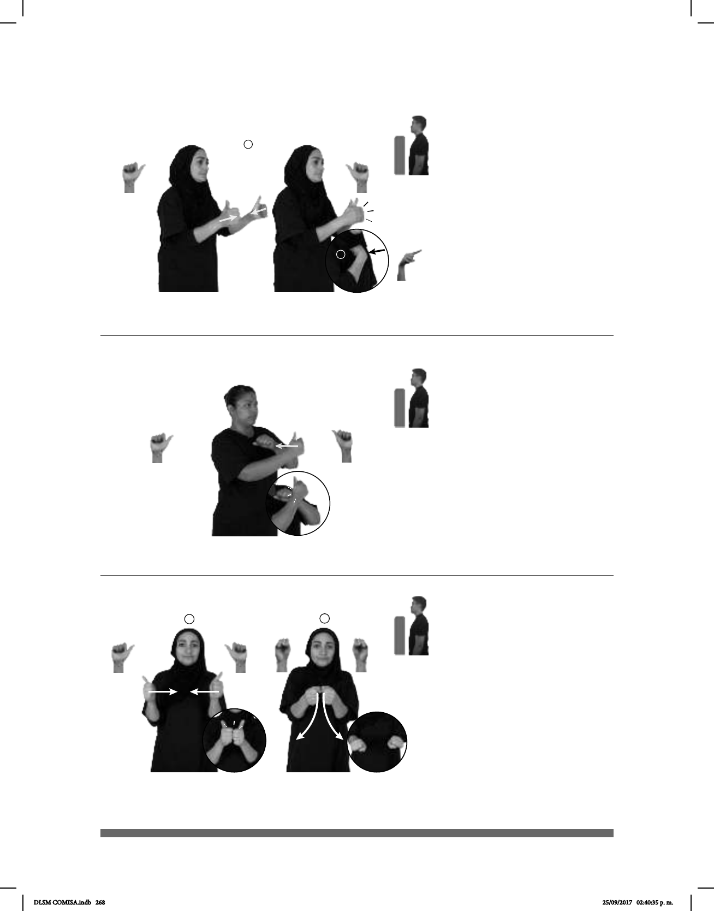

268
1
2
(A-106)
AYER pos-MI PRIMO CONMIGO pro-NOSOTROS-DE-DOS PELEAR
Mi primo se peleó conmigo ayer.
(A-107)
1
Decantarse
2
AYER CINE pos-MI PRIMO YA él-CONQUISTAR-a-ella pos-MI AMIGO+MUJER
Ayer mi primo conquistó a mi amiga en el cine.
1
2
(A-108)
PASTEL pos-MI CONSUEGRO HORNEAR YA
Mi consuegro horneó un pastel.
Seña: SC: I. SS; II. SM
I. A.1; II. 1.4
I. y II. Las palmas se
encuentran frente a frente; II. Palma
oblicua hacia abajo y hacia dentro.
I. y II. A la altura del
pecho.
I. Las manos se
encuentran y se tocan frente a frente;
II. Recto hacia el pecho.
pron. Con la persona que
habla o escribe.
Seña: SB
MD A.1, MB A.2
MD palma hacia dentro.
MB palma hacia abajo.
A la altura del pecho. MD
delante de MB.
La MD golpea a la MB
en línea recta.
1. v. tr. Ganar con esfuerzo
y habilidad el amor o el afecto de una
persona. 2. v. prnl. Inclinarse, tomar
partido, decidirse.
Seña: SC: I. y II. SS
I. A.1; II. S.1
I. y II. Las palmas se
encuentran frente a frente.
I. y II. A la altura del
pecho.
I. Las manos se
encuentran y se tocan frente a
frente; II. Las manos parten de un
mismo punto y luego se abren hacia
abajo y hacia los lados.
sust. m. Suegro del hijo
de una persona.
DLSM COMISA.indb 268 25/09/2017 02:40:35 p. m.